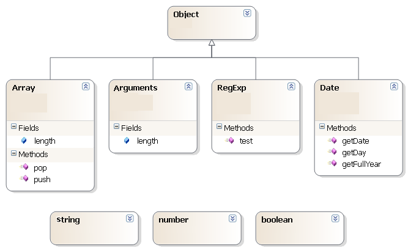

Part II
Frederic Torres 2011
C#
JavaScript
http://msdn.microsoft.com/en-us/library/x53a06bb(v=VS.100).aspx https://developer.mozilla.org/en/JavaScript/Reference/Reserved_Words
Is this make any sense to you?
{ }
Is this make any sense to you?
p = { }
Is this make any sense to you?
var p = { }
Semi colon are optional, but it is recommended to add them
var p = { };
var p = new { LastName = "Torres" };
Console.WriteLine(p.LastName);
var p = { LastName : "Torres" };
print(p.LastName);
public class Person{
public string LastName { get; set; }
public Person(string lastName){
this.LastName = lastName;
}
public void Run(){
Console.WriteLine(this.LastName + " is running...");
}
static void Main(){
var p = new Person("Torres");
p.Run();
}
}
var p = {
LastName : "Torres",
run : function(){
print(this.LastName + " is running...");
}
};
p.run();
const BindingFlags GET_FLAGS = BindingFlags.Instance | BindingFlags.Public |
BindingFlags.GetField | BindingFlags.GetProperty;
var p = new { LastName = "Torres" };
Console.WriteLine(p.LastName);
Console.WriteLine(p.GetType().InvokeMember("LastName", GET_FLAGS, null, p, null));
var p = { LastName : "Torres" };
print(p.LastName);
print(p["LastName"]);
public class Program {
static void Main(){
var p = new { LastName = "Torres", FirstName = "Frederic" };
foreach(var propertyInfo in p.GetType().GetProperties()){
Console.WriteLine(propertyInfo.Name + " = " + propertyInfo.GetValue(p, null).ToString());
}
}
}
var p = { LastName : "Torres", FirstName : "Frederic" };
for(var propertyName in p){
print(propertyName + " = " + p[propertyName]);
}
public class Person{
public string LastName { get; set; }
public string FirstName { get; set; }
public Person(string lastName, string firstName){
this.LastName = lastName;
this.FirstName = firstName;
}
public void Run(){
Console.WriteLine(this.LastName + " is running...");
}
static void Main(){
var p = new Person("Torres", "Frederic");
p.Run();
}
}
function Person(lastName, firstName){
this.LastName = lastName;
this.FirstName = firstName;
this.run = function(){ // My prefered way to add method to an object
print(this.LastName + " is running...");
}
}
var p = new Person("Torres", "Frederic");
p.run();
Classical inheritance versus prototypal inheritance
I will not go into more details because...
public class Employee {
public string LastName { get; set; }
public string FirstName { get; set; }
private bool _reservedParkingSpot { get; set; }
public Employee(string lastName, string firstName, bool reservedParkingSpot){
this.LastName = lastName;
this.FirstName = firstName;
this._reservedParkingSpot = reservedParkingSpot;
}
public void Run(){
Console.WriteLine(this.LastName + " reservedParkingSpot:" + _reservedParkingSpot);
}
static void Main(){
var e = new Employee("Torres", "Frederic", true);
e.Run();
}
}
function Employee(lastName, firstName, reservedParkingSpot) {
var
_reservedParkingSpot = reservedParkingSpot;
this.LastName = lastName;
this.FirstName = firstName;
this.run = function() {
print(this.LastName + " reservedParkingSpot:" + _reservedParkingSpot);
}
}
var e = new Employee("Torres", "Frederic", true);
e.run();
Based on the concept called: Closure.
Does not exist in Pascal, C, C++, Java and C#
Not an easy concept to get at first
But once you get it, It will change the way you write code
{ } means object literal, if there is no keyword functon, if, while, for...
[ ] with an object means reading/write the value of a property (object["PropertyName"])
Keyword for and operator in
for(var propertyName in myObject)
print(propertyName +" " + myObject[propertyName]));
Function constructor
Inheritance and virtual properties/methods (We did not talk about it. It exists)
Nested function, Private property and Closure.
public class Person{
public string LastName { get; set; }
public string FirstName { get; set; }
public Person(string lastName, string firstName){
this.LastName = lastName;
this.FirstName = firstName;
}
public static Person Create(string lastName, string firstName){
return new Person(lastName, firstName);
}
static void Main(){
var p = Person.Create("Torres", "Frederic");
}
}
function Person(lastName, firstName){
this.LastName = lastName;
this.FirstName = firstName;
}
Person.create = function(lastName, firstName){ // (X) Static Member
return new Person(lastName, firstName);
}
var p = Person.create("Torres", "Frederic");
namespace MyLibrary {
public class Person{
public string LastName { get; set; }
public string FirstName { get; set; }
public Person(string lastName, string firstName){
this.LastName = lastName;
this.FirstName = firstName;
}
}
}
public class Program{
static void Main(){
var p = new MyLibrary.Person("Torres", "Frederic");
}
}
var MyLibrary = {
Person : function (lastName, firstName){
this.LastName = lastName;
this.FirstName = firstName;
}
}
var p = new MyLibrary.Person("Torres", "Frederic");
Nested namespaces are possible
Building one namespace from different files is possible
Shortcut to access long nested are namespace are possible
[AttributeUsage(AttributeTargets.Method, AllowMultiple = false)]
public class SuperMethodAttribute : System.Attribute {
}
public class TheClass {
[SuperMethod]
public void Run(){
}
}
public class Program {
public static string GetSuperMethodName(object o) {
foreach (var mi in o.GetType().GetMembers())
foreach (object attribute in mi.GetCustomAttributes(true))
if (attribute is SuperMethodAttribute)
return mi.Name;
return null;
}
static void Main() {
var theClass = new TheClass();
Console.WriteLine("The SuperMethod is " + GetSuperMethodName(theClass));
}
}
function TheClass(){
this.run = function(){
}
this.run.SuperMethod = true;
}
function GetSuperMethodName(o){
for(var p in o)
if(typeof o[p] === "function")
if(o[p].SuperMethod === true)
return p;
return null;
}
var theClass = new TheClass();
print("The SuperMethod is " + GetSuperMethodName(theClass));
With all we learned so far, we were able to create the concepts of
JavaScript as language feature also support
Optional Parameters
Extension Methods
What's the conclusion?
What is this ?
var trace = {
On:true
}
What is this ?
var trace = {
On:true
}
var trace = new Dictionary<string,object>();
trace["Debug"] = true;
trace["Trace"] = "warning";
trace["TraceSize"] = 1000;
foreach(var e in trace){
Console.WriteLine(e.Key + " = " + e.Value.ToString());
}
var trace = { };
trace["Debug"] = true;
trace["Trace"] = "warning";
trace.TraceSize = 1000;
for(var key in trace){
print(key + " = " + trace[key]);
}
Is this make any sense to you?
[ ]
Is this make any sense to you?
var a = [ ];
var a = [ 1, 2, 3 ];
var a = new List<object>();
var b = new List<int>() { 1, 2, 3 };
var c = new List<string>() { "a", "b", "c" };
var a = [ ]; var b = [ 1, 2, 3 ]; var c = [ "a", "b", "c" ];
The truth about JavaScript's Array
A JavaScript Array is a Dictionary of a special kind
The truth about JavaScript's Array
A JavaScript Array is an Object where the property name can only be integer values
A JavaScript Array is a Dictionary where the keys can only be integer values
The property length always return the max key

var a = new List<string>() { "a", "b", "c" };
for(var i=0; i < a.Count; i++){
Console.WriteLine(a[i]);
}
var a = [ "a", "b", "c" ];
for(var i=0; i < a.length; i++){
print(a[i]);
}
var a = new List<string>() { "a", "b", "c" };
foreach(var i in a){
Console.WriteLine(i);
}
var a = [ "a", "b", "c" ];
for(var i in a){
print(a[i]);
}
var a = new List<string>() { "a", "b", "c" };
a.ForEach(
v => { Console.WriteLine(v); } // Lambda Statment
);
var a = [ "a", "b", "c" ];
a.forEach(
function(v){
print(v);
}
);
JavaScript Array can be used as
Queue - Queue<T>
Array methods:
With Extension Methods we can create the C# methods that we are used to.
Data Structures
var numbers = new List<int> { 1, 2, 3, 4, 5, 6, 7, 8, 9 };
var evenNumbers = numbers.FindAll(i => i % 2 == 0); // Lambda Expression
evenNumbers.ForEach(n => { // Lambda Statment
Console.WriteLine(n);
});
var numbers = [ 1, 2, 3, 4, 5, 6, 7, 8, 9 ];
var evenNumbers = numbers.filter(function(i) { return i % 2 == 0; });
evenNumbers.forEach(function(n){
print(n);
});
public class Program {
static void Main(){
var annoyingPeopleInHighSchool = new List<Person>() {
new Person("Descartes", "Rene" ),
new Person("Pascal" , "Baise" ),
new Person("Laplace" , "Pierre-Simon")
};
var funnyPeopleInHighSchool = from p in annoyingPeopleInHighSchool
where p.LastName=="Laplace"
select p;
foreach(var p in funnyPeopleInHighSchool)
Console.WriteLine(p.LastName);
}
}
var annoyingPeopleInHighSchool = [
new Person("Descartes", "Rene" ),
new Person("Pascal" , "Baise" ),
new Person("Laplace" , "Pierre-Simon")
];
var funnyPeopleInHighSchool = annoyingPeopleInHighSchool.filter(function(p) {
return p.LastName==="Laplace" ? p : undefined;
});
funnyPeopleInHighSchool.forEach(function(p){
print(p.LastName);
});
JavaScript
Is a simple programming language
Deserved to be understood
Once you understand it and follow best practices to work around the bad part.
And in 2011, JavaScript runs fast everywhere.